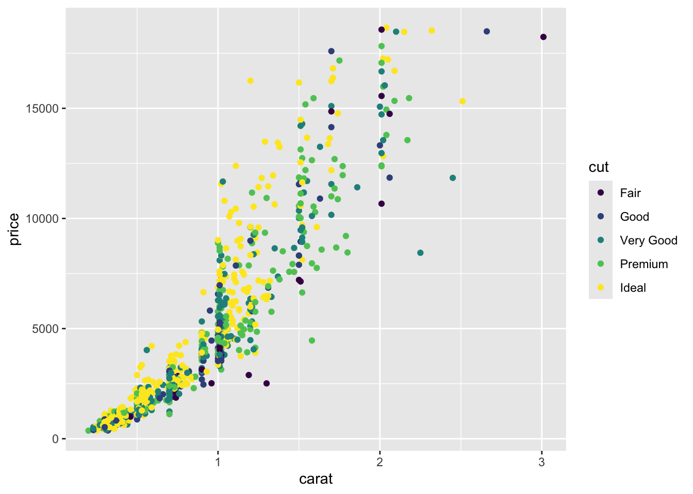
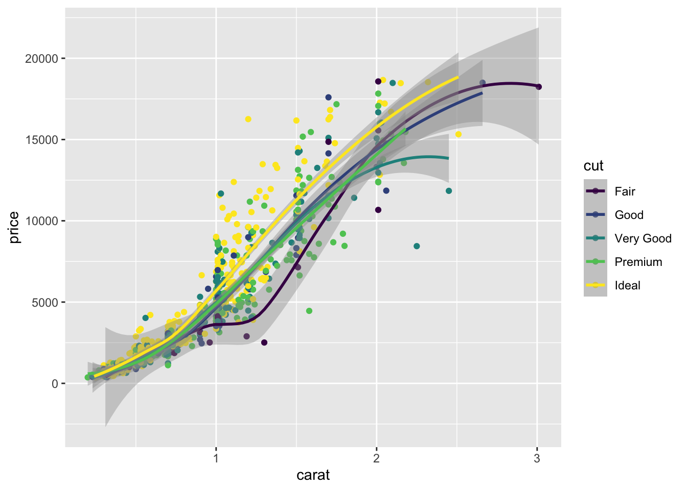
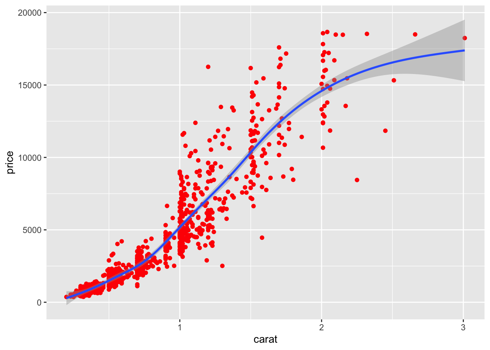

# import datadata_transcript_exp_tidy <-read_csv(here("data/data_transcript_exp_tidy.csv"))# save to have smaller namedata <- data_transcript_exp_tidy# examples of grouping by differently - type these into the console to see the differencegroup_by(data, type)
# specifying colors of plotsdiamonds_subset <-sample_n(diamonds, size =1000)# scatter plot with color by cut - aesthetics specified in the main "mapping"ggplot( diamonds_subset,aes(x = carat, y = price, color = cut)) +geom_point()
# scatter plot with color by cut - aesthetics specified in the geom "mapping"ggplot( diamonds_subset,aes(x = carat, y = price)) +geom_point(aes(color = cut))

# color specified in the main mapping will apply universally to all geomsggplot( diamonds_subset,aes(x = carat, y = price, color = cut)) +geom_point() +geom_smooth()
`geom_smooth()` using method = 'loess' and formula = 'y ~
x'

# color specified in the geom mapping only applies to that layerggplot(diamonds_subset, mapping =aes(x = carat, y = price)) +geom_point(aes(color = cut)) +geom_smooth()
`geom_smooth()` using method = 'gam' and formula = 'y ~
s(x, bs = "cs")'
# coloring by a single color - more information in the tutorial aboveggplot(data = diamonds_subset,mapping =aes(x = carat, y = price)) +geom_point(color ="red") +geom_smooth()
`geom_smooth()` using method = 'gam' and formula = 'y ~
s(x, bs = "cs")'

other
log10 - ?log10
How to use Help pages: help()
required vs. optional arguments: this is possible to distinguish if you have a well-documented function. If not, trial-an-error is how it goes.
Use of commas with multiple vars: Depends on the function. Look at the exact syntax required for specific functions on the cheatsheet to know what to use: col1, col2, col3, vs col1:col3, etc
Metacharacters “.” etc.: Refer to cheatsheet on Regex + stringr